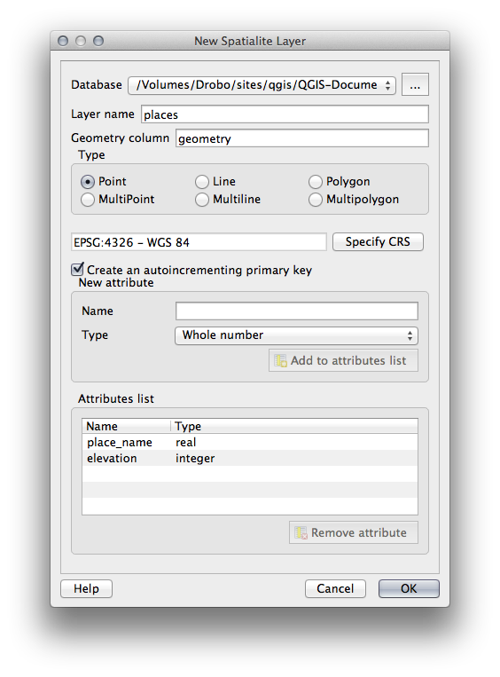
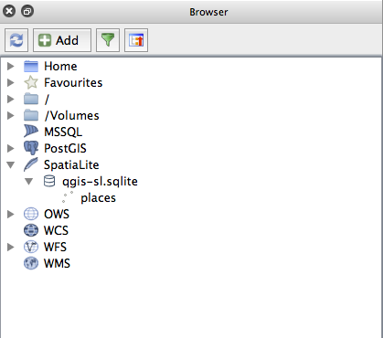

重要
翻訳は あなたが参加できる コミュニティの取り組みです。このページは現在 100.00% 翻訳されています。
18.3. レッスン：QGISでSpatiaLiteデータベースを操作する
PostGISは一般的にサーバー上で同時に複数のユーザーに空間データベース機能を提供するために使用されますが、QGISでは SpatiaLite と呼ばれるファイル形式の使用もサポートします。これは、空間データベース全体を単一ファイルに保存するための軽量でポータブルな方法です。明らかに、これら2種類の空間データベースは異なる目的に使用する必要がありますが、同じ基本原則と手法が両方に適用されます。新しいSpatiaLiteデータベースを作成し、QGISでこれらのデータベースを操作するために提供される機能を調べてみましょう。
このレッスンの目標： QGISブラウザインターフェースを使用してSpatiaLiteデータベースと対話する方法を学ぶ。
18.3.1. ★☆☆ （初級レベル） 理解しよう: ブラウザでSpatiaLiteデータベースを作る
ブラウザパネルを使用して、新しいSpatiaLiteデータベースを作成し、QGISで使用するためにセットアップすることができます。
ブラウザツリーの SpatiaLite エントリを右クリックし、 データベースの作成 を選択します。
ファイルシステムのどこにファイルを保存するかを指定し、「qgis-sl.db」という名前を付けます。
ブラウザツリーの SpatiaLite エントリをもう一度右クリックし、 NewConnection アイテムを選択します。最後の手順で作成したファイルを見つけて開きます。
これでブラウザツリーに新しいデータベースが構成され, その下には何も持たないことから, 行える操作は削除できることだけだということがわかります.このデータベースには何のテーブルも追加していないのでこれは当然です. それでは先に進んでみましょう.
新しいレイヤーを作成するためのボタンを見つけ、ドロップダウンを使用して新しいSpatiaLiteレイヤーを作成するか、
 を選択します。
を選択します。前の手順で作成したデータベースをドロップダウン内から選択します.
そのレイヤに名前
placesを付けます。次に 自動増分の主キーを作成する のチェックボックスを選択します.
以下に示すように、2つの属性を追加します
OK をクリックしてテーブルを作成します.
 ブラウザの上部にある更新ボタンをクリックすると、 ``場所 `` テーブルが一覧表示されます。
 テーブルを右クリックして, 前のレッスンで行ったようにプロパティを表示することができます.
ここから編集のセッションを開始して直接新しいデータベースにデータを追加することができます.
また、DB Managerを使用してデータベースにデータをインポートする方法についても学びました。これと同じ手法を使用して、新しいSpatiaLiteDBにデータをインポートできます。
18.3.2. 結論
SpatiaLiteデータベースを作成し、それらにテーブルを追加し、これらのテーブルをQGISのレイヤーとして使用する方法を見てきました。